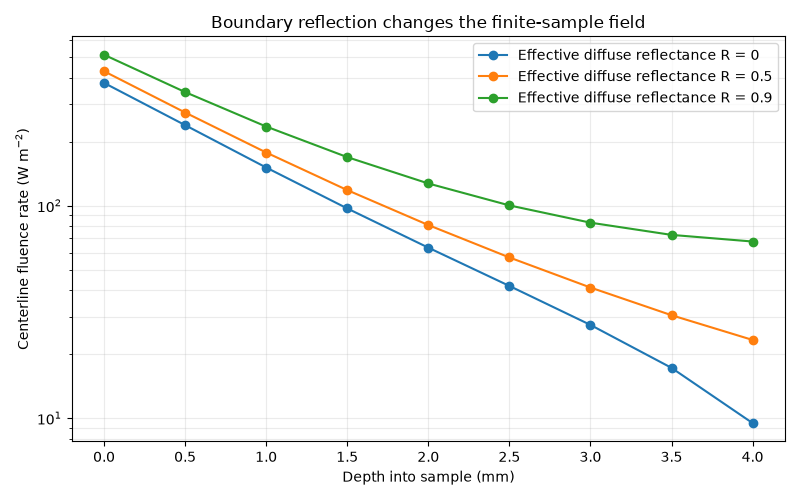

Note
Go to the end to download the full example code.
Changing the diffuse boundary reflectance#
Solve the same illuminated slab with three effective diffuse reflectances. The centerline fluence increases as less diffuse current escapes through the sample boundary. The parameter is not a Fresnel reflectance. Inputs are illustrative.
import os
import matplotlib.pyplot as plt
import numpy as np
from MomentRT import (
CartesianMesh,
Diffusion,
Material,
RobinBoundary,
Simulation,
StructuredMedium,
SurfaceSource,
ureg,
)
show_figures = os.environ.get("MOMENTRT_SPHINX_GALLERY") != "1"
Define a homogeneous finite sample#
The sample is illuminated through its upper z face and uses a common refractive index throughout.
material = Material(
absorption=0.03 / ureg.millimeter,
reduced_scattering=1.0 / ureg.millimeter,
refractive_index=1.4,
)
sample = StructuredMedium(
origin=np.array([-4, -4, 0]) * ureg.millimeter,
size=np.array([8, 8, 4]) * ureg.millimeter,
)
sample.add_background(
material=material,
)
mesh = CartesianMesh.from_sample(
sample=sample,
shape=(13, 13, 9),
)
source = SurfaceSource(
face="z_min",
position=np.array([0, 0, 0]) * ureg.millimeter,
radius=1.5 * ureg.millimeter,
wavelength=970 * ureg.nanometer,
optical_power=1 * ureg.milliwatt,
)
Reuse the same inputs while varying R#
Compare a more open diffuse boundary with progressively stronger internal diffuse reflection.
reflectance_values = (0.0, 0.5, 0.9)
center_index_x = mesh.shape[0] // 2
center_index_y = mesh.shape[1] // 2
depth = (
mesh.origin[2]
+ np.arange(mesh.shape[2]) * mesh.spacing[2]
).to("millimeter").magnitude
centerline_profiles = []
results = []
for reflectance in reflectance_values:
boundary = RobinBoundary(
effective_reflectance=reflectance,
)
solver = Diffusion(
boundaries={
"x_min": boundary,
"x_max": boundary,
"y_min": boundary,
"y_max": boundary,
"z_min": boundary,
"z_max": boundary,
},
)
simulation = Simulation(
medium=sample,
source=source,
mesh=mesh,
solver=solver,
)
result = simulation.run()
results.append(result)
fluence = result.fluence.values.to("watt / meter**2").magnitude
centerline_profiles.append(fluence[center_index_x, center_index_y, :])
Plot fluence through the center of the sample#
Each curve shares the same material, source power, spot, and mesh.
figure, axes = plt.subplots(figsize=(8, 5))
for reflectance, profile in zip(reflectance_values, centerline_profiles):
axes.plot(
depth,
profile,
marker="o",
label=f"Effective diffuse reflectance R = {reflectance:g}",
)
axes.set_yscale("log")
axes.set_xlabel("Depth into sample (mm)")
axes.set_ylabel("Centerline fluence rate (W m$^{-2}$)")
axes.set_title("Boundary reflection changes the finite-sample field")
axes.grid(True, which="both", alpha=0.25)
axes.legend()
figure.tight_layout()

Check energy accounting for each case#
The reported escape is transmitted power integrated over all sample faces.
for reflectance, result in zip(reflectance_values, results):
incoming_power = result.energy_balance["incoming_power"].to("milliwatt")
escaping_power = result.energy_balance["escaping_power"].to("milliwatt")
print(
f"R = {reflectance:g}: "
f"incoming = {incoming_power:.4g}, "
f"escaping = {escaping_power:.4g}"
)
if show_figures:
plt.show()
R = 0: incoming = 1 milliwatt, escaping = 0.838 milliwatt
R = 0.5: incoming = 1 milliwatt, escaping = 0.7425 milliwatt
R = 0.9: incoming = 1 milliwatt, escaping = 0.4101 milliwatt
Total running time of the script: (0 minutes 0.330 seconds)